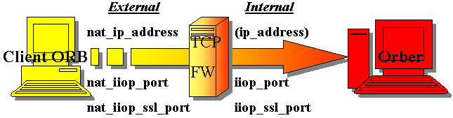

5 Installing Orber
5.1 Installation Process
This chapter describes how to install Orber in an Erlang Environment.
Preparation
To begin with, you must decide if you want to run Orber as a:
- Single node (non-distributed) - all communication with other Orber instances and ORB's supplied by other vendors use the OMG GIOP protocol.
- Multi node (distributed) - all Orber nodes, within the same domain, communicate via the Erlang distribution protocol. For all other Orber instances, i.e. not part of the same domain, and ORB's supplied by other vendors, the OMG GIOP protocol is used.
Which approach to use is highly implementation specific, but a few things you should consider:
- All nodes within an Orber domain should have the same security level.
- If the capacity is greater than load (volume of traffic) a single-node Orber might be a good solution.
- In some cases the distributed system architecture requires a single-node Orber installation.
- A multi-node Orber makes it possible to load balance and create a more fault tolerant system. The Objects can also have a uniform view if you use distributed Mnesia tables.
- Since the GIOP protocol creates a larger overhead than the Erlang distribution protocol, the performance will be better when communicating with Objects within the same Orber domain compared with inter ORB communication (GIOP).
You also have to decide if you want Orber to store internal data using disc_copies and/or ram_copies. Which storage type you should depends if/how you intend to use Mnesia in your application. If you intend to use disc_copies you must start with creating a Mnesia schema, which contain information about the location of the Erlang nodes where Orber is planned to be run. For more background information, see the Mnesia documentation.
In some cases it is absolutely necessary to change the default configuration of Orber. For example, if two Orber-ORB's shall be able to communicate via GIOP, they must have a unique domain domain. Consult the configuration settings section. If you encounter any problems; see the chapter about Debugging in this User's Guide.
Jump Start Orber
The easiest way to start Orber is to use orber:jump_start(Port), which start a single-node ORB with (most likely) a unique domain (i.e. "IP-number:Port"). This function may only be used during development and testing. For any other situation, install and start Orber as described in the following sections. The listen port, i.e. iiop_port configuration parameter, is set to the supplied Port.
How Orber is configured when using orber:jump_start(Port) may change at any time without warning. Hence, this operation must not be used in systems delivered to a customer.
Install Single Node Orber
Since a single node Orber communicate via the OMG GIOP protocol it is not necessary to start the Erlang distribution (i.e. using -name/-sname).
If we use ram_copies there is no need for creating a disk based schema. Simply use:
erl> mnesia:start().
erl> corba:orb_init([{domain, "MyRAMSingleNodeORB"}]).
erl> orber:install([node()], [{ifr_storage_type, ram_copies}]).
erl> orber:start().
If you installation requires disc_copies you must begin with creating a Mnesia schema. Otherwise, the installation is similar to a RAM installation:
erl> mnesia:create_schema([node()]).
erl> mnesia:start().
erl> corba:orb_init([{domain, "MyDiskSingleNodeORB"}]).
erl> orber:install([node()], [{ifr_storage_type, disc_copies},
{nameservice_storage_type, disc_copies}]).
erl> orber:start().
You can still choose to store the IFR data as ram_copies, but then the data must be re-installed (i.e. invoke orber:install/2) if the node is restarted. Hence, since the IFR data is rather static you should use disc_copies. For more information see the orber section in the reference manual.
If you do not need to change Orber's configuration you can skip orb_init/1. But, you should at least set the IIOP timeout parameters.
Install RAM Based Multi Node Orber
Within a domain Orber uses the Erlang distribution protocol. Hence, you must start it first by, for example, using:
hostA> erl -sname nodeA
In this example, we assume that we want to use two nodes; nodeA and nodeB. Since Mnesia must know which other nodes should a part of the distribution we either need to add the Mnesia configuration parameter extra_db_nodes or use mnesia:change_config/2. To begin with, Mnesia must be started on all nodes before we can install Orber:
nodeA@hostA> mnesia:start().
nodeA@hostA> mnesia:change_config(extra_db_nodes,
[nodeA@hostA, nodeB@hostB]).
After that the above have been repeated on nodeB we must first make sure that both nodes will use the same domain name, then we can install Orber:
nodeA@hostA> corba:orb_init([{domain, "MyRAMMultiNodeORB"}]).
nodeA@hostA> orber:install([nodeA@hostA, nodeB@hostB],
[{ifr_storage_type, ram_copies}]).
nodeA@hostA> orber:start().
Note that you can only invoke orber:install/1/2 on one of the nodes. Now we can start Orber on the other node:
nodeB@hostB> corba:orb_init([{domain, "MyRAMMultiNodeORB"}]).
nodeB@hostB> orber:start().
Install Disk Based Multi Node Orber
As for RAM based multi-node Orber installations, the Erlang distribution must be started (e.g. erl -sname nodeA). The major difference is that when it is disk based a Mnesia schema must be created:
nodeA@hostA> mnesia:create_schema([nodeA@hostA, nodeB@hostB]).
nodeA@hostA> mnesia:start().
In this example, we assume that we want to use two nodes; nodeA and nodeB. Since it is not possible to create a schema on more than one node. Hence, all we have to do is to start Mnesia (i.e. invoke mnesia:start()) on nodeB.
After Mnesia have been started on all nodes, you must confirm that all nodes have the same domain name, then Orber is ready to be installed:
nodeA@hostA> corba:orb_init([{domain, "MyDiskMultiNodeORB"}]).
nodeA@hostA> orber:install([nodeA@hostA, nodeB@hostB],
[{ifr_storage_type, disc_copies}]).
nodeA@hostA> orber:start().
Note that you can only invoke orber:install/1/2 on one of the nodes. Now we can start Orber on the other node:
nodeB@hostB> corba:orb_init([{domain, "MyDiskMultiNodeORB"}]).
nodeB@hostB> orber:start().
5.2 Configuration
It is essential that one configure Orber properly, to avoid, for example, malicious attacks and automatically terminate IIOP connections no longer in use. An easy way to extract information about Orber's configuration parameters is to invoke the operation orber:info/1/2. Orber offer the following configuration parameters:
| Key | Range | Default |
| domain | string() | "ORBER" |
| iiop_port | integer() >= 0 | 4001 |
| nat_iiop_port | integer() > 0 | {local, integer(), [{integer(), integer()}]} | The same as iiop_port |
| iiop_out_ports | 0 | {integer(),integer()} | 0 |
| iiop_out_ports_attempts | integer() > 0 | 1 |
| iiop_out_ports_random | true | false | false |
| iiop_max_fragments | integer() > 0 | infinity | infinity |
| iiop_max_in_requests | integer() > 0 | infinity | infinity |
| iiop_max_in_connections | integer() > 0 | infinity |
| iiop_backlog | integer() > 0 | 5 |
| iiop_packet_size | integer() > 0 | infinity | infinity |
| ip_address | string() | {multiple, [string()]} | All interfaces |
| ip_address_local | string() | Defined by the underlying system |
| nat_ip_address | string() | {multiple, [string()]} | {local, string(), [{string(), string()}]} | The same as ip_address |
| objectkeys_gc_time | integer() > 0 | infinity | infinity |
| giop_version | {1,0} | {1,1} | {1,2} | {1,1} |
| iiop_setup_connection_timeout | integer() > 0 | infinity | infinity |
| iiop_connection_timeout | integer() > 0 | infinity | infinity |
| iiop_in_connection_timeout | integer() > 0 | infinity | infinity |
| iiop_out_keepalive | true | false | false |
| iiop_in_keepalive | true | false | false |
| iiop_timeout | integer() > 0 | infinity | infinity |
| interceptors | {native, [atom()]} | - |
| local_interceptors | {native, [atom()]} | - |
| orbInitRef | [string()] | undefined | undefined |
| orbDefaultInitRef | string() | undefined | undefined |
| orber_debug_level | 0 - 10 | 0 |
| flags | integer() >= 0 | 0 |
| iiop_acl | [{atom(), string()}] | [{atom(), string(), [string()]}] | [] |
| secure | no | ssl | no |
| ssl_generation | 2 | 3 | 2 |
| iiop_ssl_port | integer() >= 0 | 4002 |
| iiop_ssl_accept_timeout | integer() > 0 | infinity | infinity |
| iiop_ssl_backlog | integer() > 0 | 5 |
| iiop_ssl_ip_address_local | string() | Defined by the underlying system |
| nat_iiop_ssl_port | integer() > 0 | {local, integer(), [{integer(), integer()}]} | The same as iiop_ssl_port |
| ssl_server_options | list() | See the SSL application for valid options. |
| ssl_client_options | list() | See the SSL application for valid options. |
| iiop_ssl_out_keepalive | true | false | false |
| iiop_ssl_in_keepalive | true | false | false |
Comments on the table 'Orber Configuration Parameters':
- domain
- Since Orber domains, they are supposed to communicate via IIOP, MUST have unique names, communication will fail if two domains have the same name. The domain name MAY NOT contain ^G (i.e. \007).
- iiop_port
- If set to 0 the OS will pick any vacant port.
Note:On a UNIX system it is preferable to have a IIOP port higher than 1023, since it is not recommended to run Erlang as a root user. - nat_iiop_port
- The value is either an integer or {local, DefaultNATPort, [{Port, NATPort}]}. See also Firewall Configuration.
- iiop_out_ports
- When set to 0 any available port will be used. If a range is specified, Orber will only use the local ports within the interval when trying to connect to another ORB (Orber acts as a client ORB). If all ports are in use communication will fail. Hence, it is absolutely necessary to set iiop_connection_timeout as well. Otherwise, connections no longer in use will block further communication. If one use, for example, erl -orber iiop_out_ports "{5000,5020}", Orber will only use port 5000 to 5020 when connecting. If communicating via SSL, make sure you use a version that supports the local {port, Port} option. See also Firewall Configuration.
- iiop_out_ports_random
- Requires that iiop_out_ports define a port range. If that is the case Orber will select a port randomly from that sequence.
- iiop_out_ports_attempts
- Requires that iiop_out_ports define a port range. If so Orber will accept a number of timeouts, defined by this parameter, when trying to connect to another ORB.
- iiop_max_fragments
- Limits the number of IIOP fragments allowed per request.
- iiop_max_in_requests
- Limits the number of concurrent incoming requests per incoming connection.
- iiop_max_in_connections
- Limits the number of concurrent incoming connections.
- iiop_backlog
- Defines the maximum length the queue of pending incoming connections may grow to.
- iiop_packet_size
- Defines the maximum size of incoming requests. If this limit is exceeded, the connection is closed.
- ip_address
- This option is used if orber only should listen on a specific ip interface on a multi-interface host or if exported IOR:s should contain multiple components. The value is the IPv4 or IPv6 address as a string or {multiple, IPList}. The latter requires that the object is available via the all IP addresses found in the list.
- ip_address_local
- This option defines the default local interface Orber will use when connecting to another ORB via IIOP, i.e., Orber act as the client side ORB. The value is a IPv4 or IPv6 address as a string. It is possible to override ip_address_local by defining iiop_acl or passing the Orber generic interface Context. If this option is not used, the underlying OS will choose which interface to use. For more information, see the Interface Configuration section.
- nat_ip_address
- The value is the ip address as a string (IPv4 or IPv6), {multiple, IPList} or {local, DefaultNATIPAddress, [{IPAddress, NATIPAddress}]}. See also Firewall Configuration.
- objectkeys_gc_time
- This option should be set if objects are started using the option {persistent, true}. The value is integer() seconds.
- giop_version
- Defines the default GIOP protocol version.
- iiop_setup_connection_timeout
- The value is an integer (seconds) or the atom infinity. This option is only valid for client-side connections. If this option is set, attempts to connect to other ORB's will timeout after the given time limit. Note, if the time limit is large the TCP protocol may timeout before the supplied value.
- iiop_connection_timeout
- The value is an integer (timeout in seconds between 0 and 1000000) or the atom infinity. This option is only valid for client object connections, i.e., will have no effect on server connections. Setting this option will cause client connections to be terminated, if and only if, there are no pending requests. If there are a client still waiting for a reply, Orber will try again after the given seconds have passed. The main purpose for this option is to reduce the number of open connections; it is, for example, not necessary to keep a connection, only used once a day, open at all time.
- iiop_in_connection_timeout
- The same as for iiop_connection_timeout. The only difference is that this option only affects incoming connections (i.e. Orber act as server-side ORB).
- iiop_out_keepalive
- Enables periodic transmission on a connected socket, when no other data is being exchanged. If the other end does not respond, the connection is considered broken and will be terminated. When enabled the SO_KEEPALIVE socket level option is set.
- iiop_in_keepalive
- The same as for iiop_out_keepalive. The only difference is that this option only affects incoming connections.
- iiop_timeout
- The value is an integer (timeout in seconds between 0 and 1000000) or the atom infinity. This option is only valid on the client side. Setting this option, cause all intra-ORB requests to timeout and raise a system exception, e.g. TIMEOUT, if no replies are delivered within the given time limit.
- interceptors
- If one set this parameter, e.g., erl -orber interceptors "{native, ['myInterceptor']}", Orber will use the supplied interceptor(s) for all inter-ORB communication. 'myInterceptor' is the module name of the interceptor. For more information, see the interceptor chapter in the User's Guide and the Reference Manual.
- local_interceptors
- If defined, its value will be used when activating local interceptors via Orber Environment Flags. If not defined, but the flag is set, Orber will use the value of the interceptors parameter.
- orbInitRef
- Setting this option, e.g., erl -orber orbInitRef [\"NameService=corbaloc::host.com/NameService\"], will alter the location from where corba:resolve_initial_references(Key) tries to find an object matching the given Key. The keys will also appear when invoking corba:list_initial_services(). This variable overrides orbDefaultInitRef
- orbDefaultInitRef
- If a matching Key for orbInitRef is not found, and this variable is set, it determines the location from where orber:resolve_initial_references(Key) tries to find an object matching the given Key. Usage: erl -orber orbDefaultInitRef \"corbaloc::host.com\".
- orber_debug_level
- The range is 0 to 10. Using level 10 is the most verbose configuration. This option will generate reports, using the error_logger, for abnormal situations. It is not recommended to use this option for delivered systems since some of the reports is not to be considered as errors. The main purpose is to assist during development.
- flags
- No flags are activated in the default case. The available configuration settings are described in Orber Environment Flags.
- iiop_acl
- This option must be activated by setting
Orber Environment Flags parameter.
The value of this parameter shall be a list of [{Direction, Filter}]
and/or [{Direction, Filter, [Interfaces]}]. The Direction,
tcp_in, ssl_in, tcp_out or ssl_out, determines if
the Access Control List (ACL) applies to incoming or outgoing connections
and IIOP or IIOP over SSL. The Filter uses a extended format of
Classless Inter Domain Routing (CIDR). For example, "123.123.123.10" limits
the connection to that particular host, while "123.123.123.10/17" allows
connections to or from any host equal to the 17 most significant bits. Orber
also allow the user to specify a certain port or port range, for example,
"123.123.123.10/17#4001" and "123.123.123.10/17#4001/5001"
respectively. IPv4 or none compressed IPv6 strings are accepted.
The list of Interfaces, IPv4 or IPv6 strings, may only contain one address for outgoing connections. For incoming connections, the Interfaces list may contain several IP strings. If set for outgoing connections, and access is granted, Orber will use that local interface when connecting to the server-side ORB. For incoming connections, the client-side ORB is required to use one of the listed interfaces locally. If it fail to do so, access will be denied. The module orber_acl provides operations for evaluating the access control for filters and addresses. See also the Interface Configuration and Firewall Configuration chapters. - secure
- Determines the security mode Orber will use, which is either no if it is an insecure domain or the type of security mechanism used. Currently, per default, Orber is compliant with CSIv1 level 0, which means IIOP via SSL/TLS. The security chapter later in this manual describes how to get security in Orber and how the options are used.
- ssl_generation
- Defines which SSL version, i.e. available API, is installed. The default value, 2, refers to SSL-3.1 or later, but earlier than SSL-4.0. If set to 3 SSL-4.0, or later, must be available. Currently it not possible to use 1, it is only reserved for future use.
- iiop_ssl_port
- If set, the value must be an integer greater than zero and not equal to iiop_port.
- iiop_ssl_accept_timeout
- The value is an integer (timeout in seconds) or the atom infinity and determine how long the SSL handshake may take. This option should be set to avoid if a client never initiate the handshake.
- iiop_ssl_backlog
- Defines the maximum length the queue of pending incoming connections may grow to.
- iiop_ssl_ip_address_local
- This option defines the default local interface Orber will use when connecting to another ORB via IIOP SSL, i.e., Orber act as the client side ORB. The value is a IPv4 or IPv6 address as a string. It is possible to override iiop_ssl_ip_address_local by defining iiop_acl or passing the Orber generic interface Context. If this option is not used, the underlying OS will choose which interface to use. For more information, see the Interface Configuration section.
- nat_iiop_ssl_port
- If set, the value must be an integer greater than zero or {local, DefaultNATPort, [{Port, NATPort}]}. See also Firewall Configuration.
- ssl_server_options
- A list of the SSL options when Orber is the server. In general it's just to remove the 'ssl_server_' prefix from the old options, i.e. ssl_server_verify will just be verify in this option list. See the SSL application for the correct list of possible options and their values.
- ssl_client_options
- A list of the SSL options when Orber is the client. In general it's just to remove the ssl_client_ prefix from the old options, i.e. ssl_client_depth will just be depth in this option list. See the SSL application for the correct list of possible options and their values.
- iiop_ssl_out_keepalive
- Enables periodic transmission on a connected socket, when no other data is being exchanged. If the other end does not respond, the connection is considered broken and will be terminated. When enabled the SO_KEEPALIVE socket level option is set. Requires that the installed SSL version support the keepalive option and that the ssl_generation points to this version.
- iiop_ssl_in_keepalive
- The same as for iiop_ssl_out_keepalive. The only difference is that this option only affects incoming connections.
It is possible to invoke operations using the extra timeout parameter:
erl> module_interface:function(ObjRef, Timeout, ..Arguments..).
erl> module_interface:function(ObjRef, [{timeout, Timeout}], ..Arguments..).
erl> module_interface:function(ObjRef, ..Arguments..). The extra Timeout argument will override the configuration parameter iiop_timeout. It is, however, not possible to use infinity to override the Timeout parameter. The Timeout option is also valid for objects which resides within the same Orber domain.
The iiop_setup_connection_timeout, iiop_timeout, iiop_connection_timeout and iiop_in_connection_timeout variables should be used. The specified values is implementation specific, i.e., WAN or LAN, but they should range from iiop_setup_connection_timeout to iiop_connection_timeout.
To change these settings in the configuration file, the -config flag must be added to the erl command. See the Reference Manual config(4) for further information. The values can also be sent separately as options to the Erlang node when it is started, see the Reference Manual erl(1) for further information.
Orber Environment Flags
The Environment Flags allows the user to activate debugging facilities or change Orber's behavior. The latter may result in that Orber is no longer compliant with the OMG standard, which may be necessary when communicating with a non-compliant ORB.
| Hexadecimal Value | OMG Compliant | Description |
| 0001 | no | Exclude CodeSet Component |
| 0002 | yes | Local Typechecking |
| 0004 | yes | Use Host Name in IOR |
| 0008 | yes | Enable NAT |
| 0020 | yes | Local Interceptors |
| 0080 | yes | Light IFR |
| 0100 | yes | Use IPv6 |
| 0200 | yes | EXIT Tolerance |
| 0400 | yes | Enable Incoming ACL |
| 0800 | yes | Enable Outgoing ACL |
| 1000 | yes | Use Current Interface in IOR |
Any combination of the flags above may be used and changes the behavior as follows:
- Exclude CodeSet Component - instruct Orber to exclude the CodeSet component in exported IOR:s. When activated, no negotiating regarding character and wide character conversions between the client and the server will occur. This flag will, most likely, cause problems if your IDL specification contains the data types wchar and/or wstring.
- Local Typechecking - If activated, parameters, replies and raised exceptions will be checked to ensure that the data is correct. If an error occurs, the error_logger is used to generate reports. One MAY NOT use this option for delivered systems due to the extra overhead. Since this option activates typechecking for all objects generated on the target node, it is also possible to use the option {local_typecheck, boolean()}, when invoking oe_create/2, oe_create_link/2, corba:create/4 or corba:create_link/4, to override the configuration parameter.
- Use Host Name in IOR - normally Orber inserts the IP-number in IOR:s when they are exported. In some cases, this will cause the clients to open two connections instead of one.
- Enable NAT - if this flag is set, it is possible to use the NAT (Network Address Translation) configuration parameters (nat_iiop_port, nat_iiop_ssl_port and nat_ip_address).
- Local Interceptors - use interceptors for local invocations.
- Light IFR - if the IFR is not explicitly used and this flag is set, Orber will use a minimal IFR to reduce memory usage and installation time.
- Use IPv6 - when this option is activated, Orber will use IPv6 for inter-ORB communication.
- EXIT Tolerance - servers will survive even though the call-back module caused an EXIT.
- Enable Incoming ACL - activates access control for incoming connections.
- Enable Outgoing ACL - activates access control for outgoing connections.
- Use Current Interface in IOR - when set, Orber will add the interface the request came via to exported local IOR:s.
Invoking the operation orber:info/1/2 will display the currently set flags in a readable way.
5.3 Firewall Configuration
Firewalls are used to protect objects from clients in other networks or sub-networks, but also to restrict which hosts internal objects may connect to (i.e. inbound protection and outbound protection). A firewall can limit access based on:
- Transport Level - performs access control decisions based on address information in TCP headers.
- Application Level - understands GIOP messages and the specific transport level inter-ORB Protocol supported e.g. IIOP.
This section describes how to configure a Transport Level firewall. It must have prior knowledge of the source to destination mappings, and conceptually has a configuration table containing tuples of the form: ({inhost:inport}, {outhost:outport}). If there are no port restrictions it is rather easy to configure the firewall. Otherwise, we must consider the following alternatives:
- Incoming Requests - Orber only uses the port-numbers specified by the configuration parameters iiop_port and iiop_ssl_port. Other ORB's may use several ports but it should be possible to change this behavior. Consult the other ORBs documentation.
- Outgoing Requests - Most ORB's, Orber included, ask the OS to supply a vacant local port when connecting to the server-side ORB. It is possible to change this behavior when using Orber (i.e. set the configuration parameter iiop_out_ports).
Using the option iiop_out_ports may result in that Orber runs out of valid ports numbers. For example, other applications may steal some of the ports or the number of concurrent outgoing connections to other ORBs may be higher than expected. To reduce, but not eliminate, the risk you should use iiop_connection_timeout.
Firewall configuration example:
# "Plain" IIOP
To: Orber-IPNo:(iiop_port) From: ORB-IPNo:X
To: ORB-IPNo:Z From: Orber-IPNo:(iiop_out_ports | Any Port)
# IIOP via SSL
To: Orber-IPNo:(iiop_port) From: ORB-IPNo:X
To: Orber-IPNo:(iiop_ssl_port) From: ORB-IPNo:Y
To: ORB-IPNo:Z From: Orber-IPNo:(iiop_out_ports | Any Port)
If the communication take place via a TCP Firewall with NAT (Network Address Translation), we must activate this behavior and define the external address and/or ports.
Figure 5.1: TCP Firewall With NAT
Using NAT makes it possible to use different host data for different network domains. This way we can share Internet Protocol address resources or obscure resources. To enable this feature the Enable NAT flag must be set and nat_iiop_port, nat_iiop_ssl_port and nat_ip_address configured, which maps to iiop_port, iiop_ssl_port and ip_address respectively. Hence, the firewall must be configured to translate the external to the internal representation correctly. If these NAT parameters are assigned a single port number or IP address, only those will be used when an IOR is exported to another ORB. When ip_address is set to {multiple, [IPAddress]}, nat_ip_address should be configured in the same way, so that each NAT IP address can be translated to a valid address by the firewall. If objects are supposed to be accessible via different interfaces and port, see also Interface Configuration, the options {local, DefaultNATIPAddress, [{IPAddress, NATIPAddress}]} and/or {local, DefaultNATPort, [{Port, NATPort}]} shall be used. The default NAT IP address and port, should be translated to the value of ip_address_local and the default listen port by the firewall. If the IP address and/or port is not found in the list, the default values will be inserted in the IOR. The firewall must be able to translate these correctly.
If it is necessary to limit the access to an ORB within a secure network, but other applications running on the same host may not be blocked out, one can use a Application Level firewall or Orber Access Control List (ACL). The latter makes it possible for the user to define which hosts may communicate, either as server or client, with Orber. This is achieved by defining the configuration parameter iiop_acl. The Classless Inter Domain Routing (CIDR) Filter determines which peer interfaces and ports the other ORB may use.
| Filter | Peer Interface(s) | Peer Port(s) |
| "10.1.1.1" | 10.1.1.1 | any |
| "10.1.1.1/8" | 10.0.0.0-10.255.255.255 | any |
| "10.1.1.1/8#4001" | 10.0.0.0-10.255.255.255 | 4001 |
| "10.1.1.1/8#4001/5001" | 10.0.0.0-10.255.255.255 | 4001-5001 |
Orber ACL, also allows the user to define which local interface(s) may be used, but will not detect spoofing. The operation orber_acl:match/2/3 makes it easy to verify whether access would be granted or not. For example, if Orber would be started with the ACL [{tcp_out, "10.1.1.1/8#4001/5001"}], then orber_acl:match/2 would behave as follows:
erl> orber_acl:match({11,1,1,1}, tcp_out).
false
erl> orber_acl:match({10,1,1,1}, tcp_out).
true
erl> orber_acl:match({11,1,1,1}, tcp_out, true).
{false,[],0}
erl> orber_acl:match({10,1,1,1}, tcp_out, true).
{true,[],{4001,5001}}
Only if the returned boolean is true the extra return values makes a difference. In the example above, {true,[],{4001,5001}} means that Orber may connect to "10.1.1.1", using any local interface, if the server-side ORB listens for incoming connect requests on a port within the range 4001-5001. Note, invoking the orber_acl:match/2/3 operation, will not result in a connect attempt by Orber. The reason for this, is that this function may be used on a live node as well as in test environment. Hence, if a local interface is currently not available or no server-side ORB available via the given host/port(s), will not be detected by Orber.
5.4 Interface Configuration
In many cases it is sufficient to simply configure the underlying OS which local interfaces shall be used for all applications. But, in some cases it is required, due to, for example, the firewall configuration, that different local interfaces are used for different applications. Some times, it is even necessary to use a specific interface for a single CORBA object. This section describe how one can alter this in different ways.
The default behavior is that Orber lets the OS configuration decide which interface will be added in IOR:s exported to another ORB and the local interface used when connecting to another ORB (Orber act as client side ORB). The latter can be overridden by setting the configuration parameters iiop_ssl_ip_address_local and/or ip_address_local, which will affect IIOP via SSL and IIOP respectively. These parameters can be overridden by using the Orber generic interface Context or defining an ACL (Access Control List). The latter always takes precedence if a local interface is included (e.g. [{tcp_out, "10.0.0.0/8", ["10.0.0.1"]}]). If the interface is excluded (e.g. [{tcp_out, "10.0.0.0/8"}]), the interface chosen will, in the following order, be determined by #'IOP_ServiceContext'{}, ip_address_local/iiop_ssl_ip_address_local or the configuration of the underlying system.
Adding the interface context, for generated stubs/skeletons, is done in the following way:
Ctx = #'IOP_ServiceContext'{context_id = ?ORBER_GENERIC_CTX_ID,
context_data = {interface, "10.0.0.1"}},
'CosNaming_NamingContext':resolve(NS, [{context, [Ctx]}], Name),
It is also possible to add the context to corba:string_to_object/2, corba:resolve_initial_references/2, corba:resolve_initial_references_remote/3, corba:list_initial_services_remote/2, corba_object:not_existent/2, corba_object:non_existent/2 and corba_object:is_a/3. The operations exported by corba_object are affected if the supplied IOR is external. The function corba:string_to_object/2 might require the interface context if a corbaloc or a corbaloc string is passed (See the INS chapter), while corba:resolve_initial_references_remote/3 and corba:list_initial_services_remote/2 always connect to another ORB and it might be necessary to add the context. The remaining corba operations are affected if calls are re-directed by setting the orbInitRef and/or orbDefaultInitRef configuration parameters. For more information, see the Reference Manual for each module.
Configuring which interface(s) that shall be used when exporting an IOR to another ORB, is determined by nat_ip_address, setting the flag 16#1000 and ip_address, in that order. Orber listens for incoming connections either via all interfaces or the interface defined by ip_address. It is also possible to add and remove extra listen interfaces by using orber:add_listen_interface/2/3 and orber:remove_listen_interface/1. In this case one should set the 16#1000 flag and, if necessary, set the configuration parameters {local, DefaultNATIPAddress, [{IPAddress, NATIPAddress}]} and/or {local, DefaultNATPort, [{Port, NATPort}]}.